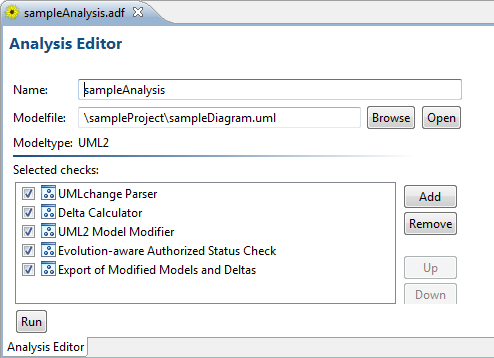
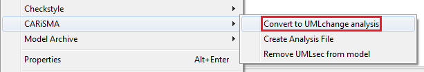

How to Create an UMLchange Analysis
What is an UMLchange Analysis?
An UMLchange analysis is a CARiSMA analysis running evolution-aware checks on a model marked with UMLchange stereotypes.
The necessary components for an UMLchange analysis (apart from the evolution-aware checks) are:
- "UMLchange Parser" - Parses the model for UMLchange applications, extracts their information regarding the changes and stores them in change descriptions.
- "Delta Calculator" - Analyzes the possibly constrained changes and their given alternatives. Computes a list of allowed deltas by solving the constraints and processing each given alternative.
- "UML2 Model Modifier" - Provides the ability to apply the deltas to the analyzed model, producing modified models on-demand.
- "Export of Modified Models and Deltas" - After checking the model, this check automatically saves the remaining successful modified models and their respective deltas.

Figure 1: An UMLchange Analysis.
Converting to an UMLchange Analysis
The easy way to convert a CARiSMA analysis to an UMLchange analysis is to add only the evolution-aware checks to the analysis,
open the context menu by right-clicking on the analysis file and choose
"Convert to UMLchange analysis" in the CARiSMA tab.
This will automatically add all necessary components for running the UMLchange analysis in the correct order.
If any of the components are already present in the analysis, they will be rearranged accordingly.

Figure 2: Converting an analysis to an UMLchange analysis.